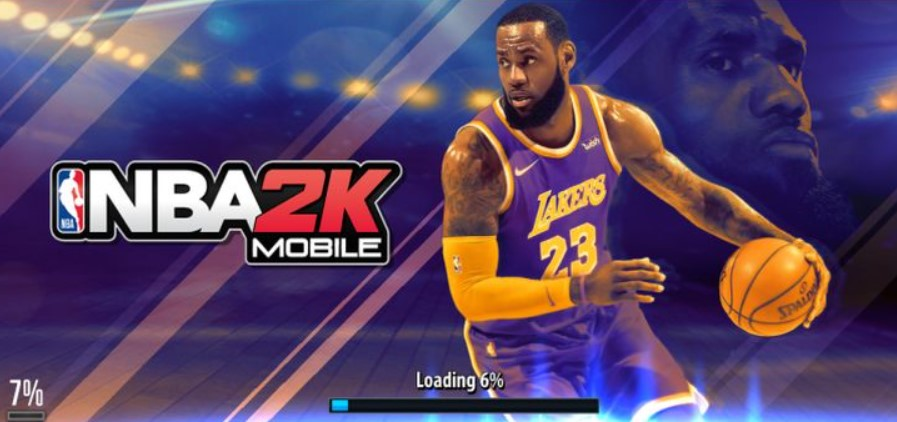

Beginners Guide to NBA 2k

New to NBA 2K? Regardless of whether you're a newcomer or a veteran of the establishment, we have some convenient tips to get you acclimated to the most recent passage just beneath. There's your amateur tips and deceives, just as certain insights regarding all the progressions that 2K has made to the basic interactivity mechanics this year, including another shot meter.
The default camera position is from the side of the court. On the off chance that you need to change this, stop the game, head to 'Camera', and change the viewpoint from here.
The shot meter has been changed in NBA 2K19. This year, it's a vertical bar that shows up close to your player, and for the absolute best, you need to deliver the ball when the bar is full.
To run, hold down the correct trigger.
Get working NBA 2k Locker Codes here
NBA 2K20 Tips and Tricks for Beginners
- Press X/A however on safeguard, and you'll naturally change to controlling the player nearest to the ball.
- In case you're guarding inside the paint on safeguard, hold down the left trigger to put your hands up, and in the method of your player, you're guarding.
- We may be totally wrapped up with this basic manual for NBA 2K20, however there are heaps of extra to cover around the game right now. Head to among our inside and out aides for more empower, or inquire on this guide sometime in the not too distant future when we'll have refreshed it with considerably more key procedures and stunts.
- Presumably the most ideal way Get NBA 2K20 MT is play control. With a run and weapon offense, you can get more than 700 NBA 2K20 MT for each game rapidly with simply a bronze crew, And as a prize, you get in any event a silver player from the list which you could sell in the sale house.